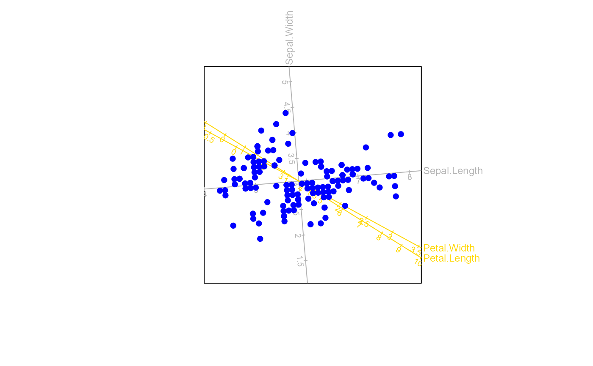

newaxes.RdThis function allows the user to format the aesthetics for the supplementary (new) biplot axes.
newaxes(bp, X.new.names=bp$var.names, which = 1:bp$num.vars, col = "orange", lwd = 1,
lty = 1, label.dir = "Orthog", label.col = col, label.cex = 0.75, label.line = 0.1,
ticks = 5, tick.col = col, tick.size = 1, tick.label = TRUE, tick.label.col = tick.col,
tick.label.cex = 0.6, tick.label.side = "below", predict.col = col, predict.lwd = lwd,
predict.lty = lty, ax.names = X.new.names, orthogx = 0, orthogy = 0)an object of class biplot.
a vector of the new column names of bp to specify which axes should be labelled.
a vector containing the new columns or variables for which the axes should be displayed, with default 1:num.vars.
the colour(s) for the axes, with default grey(0.7). Alternatively, provide a vector of colours corresponding to X.names.
the line width(s) for the axes, with default 1.
the line type(s) for the axes, with default 1.
a character string indicating the placement of the axis titles to the side of the figure. One of "Orthog" for axis titles to appear orthogonal to the side of the figure (default) , "Hor" for axis titles to appear horizontally or "Paral" for axis titles to appear parallel to the side of the figure.
the colour(s) for the axis labels, with default, col.
the label expansion for the axis labels, with default 0.75.
the distance of the axis title from the side of the figure, with default 0.1.
an integer-valued vector indicating the number of tickmarks for each axis, with default 5 for each axis.
the colour(s) for the tick marks, with default col.
a vector specifying the sizes of tick marks for each axis, with default 1 for each .
a logical value indicating whether the axes should be labelled, with default TRUE.
the colour(s) for the tick mark labels, with default tick.col.
the label expansion for the tick mark labels, with default 0.6.
a character string indicating the position of the tick label. One of "below" for the label to appear below the tick mark (default) or "above" for the label to appear above the tick mark.
the colour(s) for the predicted samples, with default col.
the line width(s) for the predicted samples, with default lwd.
the line type(s) for the predicted samples, with default lty.
a vector of size p containing user defined titles for the axes.
a numeric vector of size p specifying the x-coordinate of the parallel transformation of each axis, with default 0 for each axis. This is only used when dim.biplot = 2.
a numeric vector of size p specifying the y-coordinate of the parallel transformation of each axis, with default 0 for each axis. This is only used when dim.biplot = 2.
The object of class biplot will be appended with a list called newaxes containing elements similar to that of axes.
biplot(data = iris[,1:2]) |> PCA() |> interpolate(newvariable = iris[3:4]) |>
newaxes(col="gold") |> plot()
